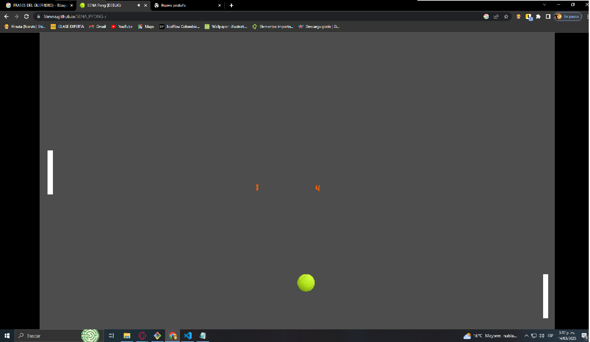

bug de SENA pong
- las paletas retroseden si la bola toca el borde superior o inferior del juego
- cuando la pelota toca una esquina de la paleta hace un recorrido muy vertical y se demora
- la pelota no esta sentrada
- el juego no tiene fin
- la inteligencia artificial es muy lenta
- la pelota se congela al llegar a la parte inferior de la pantalla
- la paleta no es fluida
- al momento de escoger al jugador que inicia se traba en algunas veces
recomendaciones para SENA PONG
- se recomienda que al hacer gol se efectue un efecto visual y de sonido
- se sugiere cambiar el fondo no tangris
- agregar efectos cuando se golpea la pelota
- definir el limite de timpo y puntos para ganar
- no hay contraste de colores entre la pelota y la paleta
- que se pueda jugar de dos personas con la pc o en linea
- aumentar la dificultad del juego de manera gradual o progresiva
- implementrar luces a la paleta
